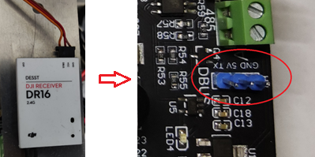
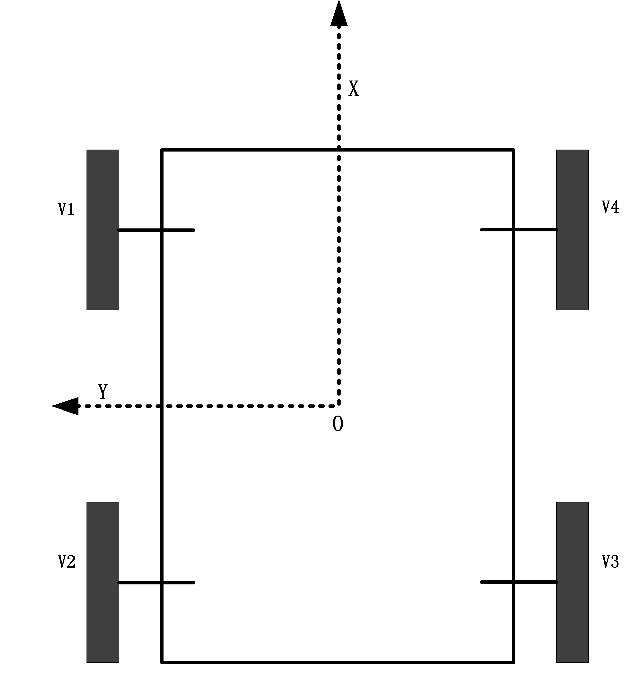
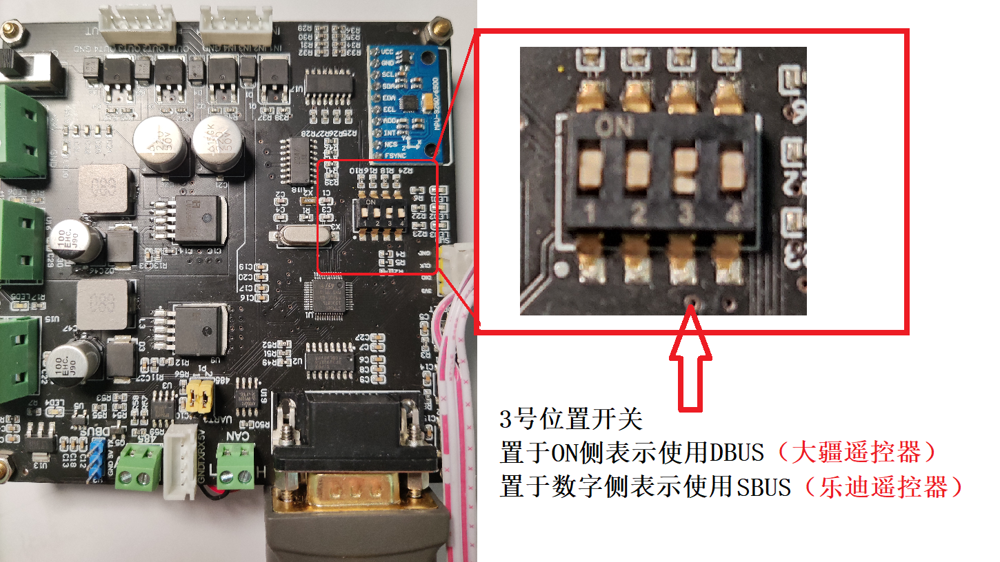
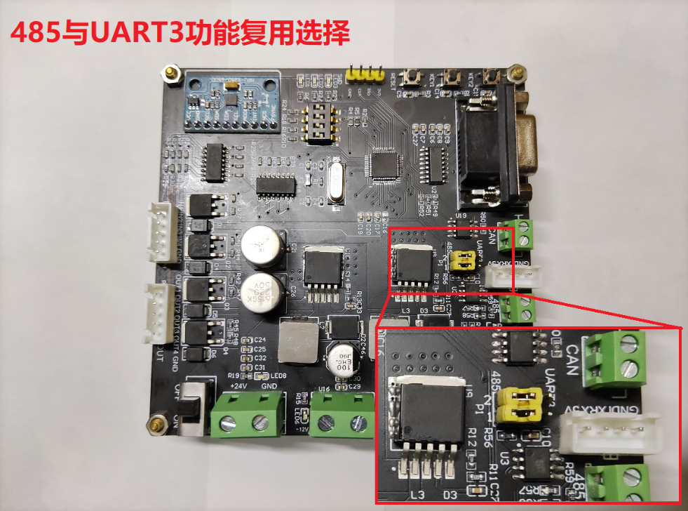
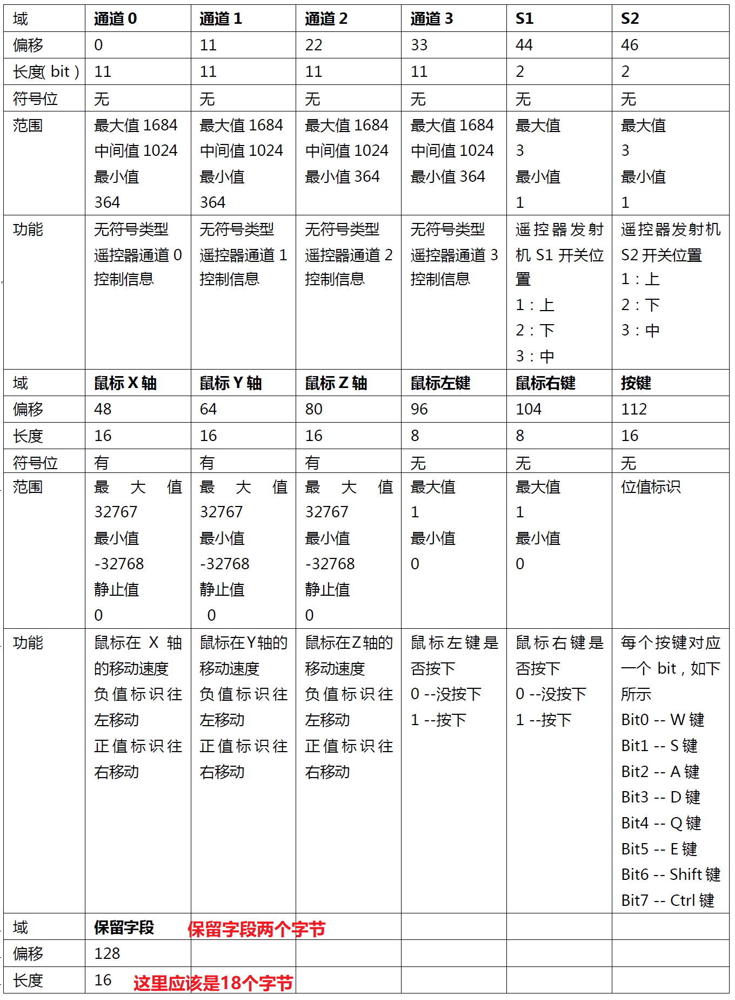
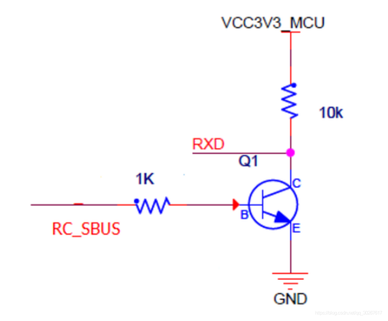
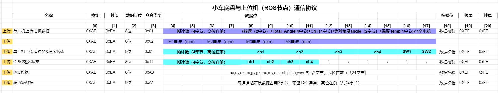
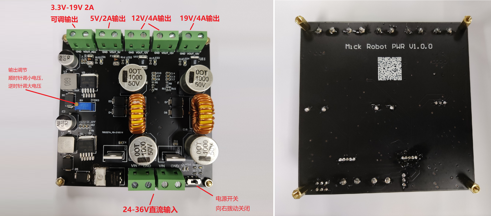

MickRobot 是一个开源小车制作项目，教程内容包含底盘的搭建过程，基于激光雷达的导航内容。项目中小车的3D图、控制板原理图和PCB文件、控制代码均为开源。该项目具有一下特性
- 1）支持两轮差速小车、四轮差速小车、麦克纳姆轮底盘三种底盘运动学模型
- 2）支持DBUS遥控器（大疆DT7遥控器）、SBUS遥控器（RadioLink T8FB）
- 3）配套ROS节点和URDF模型

QQ交流群（开源ROS自主导航小车：1149897304）

感谢：
- 徐久铭师弟帮忙设计小车的机械图以及组装。
- 于力率、温宝愉、舒康设计测试原型控制板。
- 重庆大学机器人与智慧系统实验室（RIS）经费支持。
注： 本系列教程中开源的PCB文件、3D模型、相关代码，仅仅供大家自己学习自主导航小车使用，不可用于商业用途。
Mick小车控制板
小车控制板基于STM32C8T6实现，包含有常用总线接口，同时支持5V和12V电源输出，可以满足基本需要。
- 3路串口、1路CAN接口、1路485接口（与串口3复用）
- 1路DBUS、SBUS遥控信号输入
- 3个状态指示灯，2个独立按键、4个编码开关
- 4路隔离输入、4路隔离输出
控制板原理图及PCB可从github或者加QQ群获取。 代码地址：https://github.com/RuPingCen/mick_robot_chasiss 原理图：https://github.com/RuPingCen/mick_robot_chasiss/tree/master/Reference

控制板连线说明
小车四个电机控制线通过CAN总线与控制板相连接，遥控器接收机通过控制板上的DBUS接口连接，上位机则通过232串口连接。
接收机连线
将接收机的GND、VCC、DBUS 对应连接到控制板上的蓝色排针上的GND、VCC、Tx。这里DR16接收机和普通的DBUS接收机的接线方式相同。

电机连线
电机呈U形状排列，即面向小车正前方，左上角电机ID编号为1，左下角电机ID为2，右下角电机ID为3，右上角电机ID为4。

控制板硬件接口及尺寸
控制板支持SBUS和DBUS两种协议的遥控器信号输入，这里主要是针对大疆的遥控器和乐迪的T8FB遥控器。
状态指示与按键
① 3路LED指示灯用于显示程序状态。
LED1： 指示程序运行状态，正常运行为每秒20hz闪烁。
LED2： 指示遥控器数据 每收到一次遥控器数据闪烁LED灯状态取反一次。
LED3： 指示CAN总线数据 每收到一次CAN数据闪烁LED灯状态取反一次 ② 2路按键 ③ 4路拨码开关用于调试和选择程序功能。第1位和第2位用于组合选择底盘的功能模式（差速和麦克纳姆轮），第3位开关用于选择遥控器类型（SBUS或DBUS），第4位空闲
| 序号 | 第1位 | 第2位 | 第3位 | 第4位 | 功能说明 |
|---|---|---|---|---|---|
| 1 | 0 | 0 | 差速底盘 | ||
| 2 | 0 | 1 | 麦克纳姆轮底盘 | ||
| 3 | 1 | 0 | 4WS4WD移动底盘 | ||
| 4 | 1 | 1 | 无 | ||
| 6 | 0 | SBUS协议 | |||
| 7 | 1 | DBUS协议 | |||
| 8 | x | 无 | |||
| 9 | x | 无 |
注：1表示开关拨到On位置

总线接口
1路DBUS接口、1路232接口、1路CAN总线、1路485接口、1路UART3接口（与485复用）、1路IIC。其中DBUS被用来接收遥航模遥控器的数据，232接口负责与上位机ROS通讯。CAN总线连接4个M3508电机。IIC连接板子上安装的MPU9250。485接口和UART3接口复用，可扩展其他传感器模块。
注：485接口和UART3是通过同一组串口复用实现的，默认选择了485功能，如果需要使用UART3接口，则将下图的黄色跳线帽拔下，连接右侧两个针脚即可选中UART3接口功能。

外部IO扩展
4路隔离输入（输入电压范围12-24V）。4路隔离输出（输出高阻态和GND，承受电流2A）。 控制板引脚功能如下
| 名称 | 引脚 | 功能 | ||
|---|---|---|---|---|
| LED | PA6（LED1） | PA5（LED2） | C13（LED3） | 状态指示 |
| 按键 | PA7（KEY1） | PB2（KEY2） | ||
| 四路拨码开关 | PB5 | PB4 | PB3 | PA15 |
| 隔离输入 | PB15（IN1） | PB14（IN2） | PB13（IN3） | PB12（IN4） |
| 隔离输出 | PB0（OUT1） | PB1（OUT2） | PB8（OUT3） | PB9（OUT4） |
| UART1 | PA9 | PA10 | 连接DBUS | |
| UART2 | PA2 | PA3 | 与上位机通讯 | |
| UART3 | PB10 | PB11 | 复用485和UART3 | |
| IIC | PB6(SCL) | PB7(SDA) | 连接MPU9250 | |
| CAN | A12 | A11 | 连接M3508电机 |
供电接口
控制板输入20-36V DC直流，对外提供1路DC 5V 2.5A 、1路DC 12V 2.5A 对车载传感器供电。
外形尺寸
板子外形为99*99 mm 安装孔位于四周呈轴对称分布，孔中心间距为93mm,孔直径为φ3.1 mm。如下图所示。

大疆遥控器操作说明
控制板支持SBUS和DBUS两种协议的遥控器信号输入，这里主要是针对大疆的遥控器和乐迪的T8FB遥控器进行介绍。两种协议通过板子上拨码开关的第3号位置开关进行功能选择。当第3号位置上的拨码开关拨到ON侧则表示DBUS功能启用，否则使用SBUS（大疆遥控器）通讯协议。
DT7遥控器
①遥控器左上角的拨动开关为功能选择按键：置于OFF档表示不使能遥控器（此时遥控器左右摇杆无反应，遥控器无法控制小车，由上位机控制小车，即遥控器优先级高于上位机）。置于CL、CH 档表示由遥控器控制小车，忽略上位机命令。
②遥控器右上角拨动开关上中下位置分别对应小车1m/s、2m/s、3.5m/s速度
③右手边摇杆竖直方向通道控制小车前后运动（如下图所示），右边的摇杆水平通道控制小车左右旋转。

DBUS协议
DBUS 这里主要是指大疆的DT7这个遥控器，接收机型号为DR16，该接收机也是最大支持16个通道。DR16接收机输出的信号为标准的DBUS协议数据,当遥控器与接收机建立连接后，接收机每隔14ms通过DBUS发送一帧18字节数据。也可以接入电脑获取键盘鼠标控制信息，这个可以查阅robomaster比赛的相关资料。
如下图所示，DR16输出的前 6个字节（11*4+4）包含了遥控器上摇杆的数据，后续有10个字节（16 *5）描述键盘的相关信息，保留位有两个字节，共计18个字节。

在解析该信号时候也需要通过一个非门电路对DBUS信号取反，波特率同样为100Kbps。

DR16接收机数据范围
DR16接收机输出数据如下：
- 右手横向方向对应通道1，右手竖直方向对应通道2，左手竖直方向对应通道4 横向方向对应通道3。
- 通道1至4摇杆，中间是1024 ， 水平方向向左最小（364），水平向右最大（1684）竖直方向向下最小。
- 左侧SW1的按键值为off-1 CL-3 CH-2，左侧SW2按键值为 GPS-1 ATTI中间-3 ATTI最下-2。
乐迪遥控器使用说明
T8FB遥控器
考虑到大疆遥控器价格昂贵（遥控器+接收=600+），因此新增加了对DBUS遥控器的支持，并且保持与大疆遥控器相同的操作方式。将第3号位置上的拨码开关拨到数字侧，表示SBUS功能。这里我用的时左手油门的RadioLink T8FB遥控器。
- 遥控器左上角的拨动开关为功能选择按键：置于L档，即最上方位置，表示不使能遥控器。置于H档表示由遥控器控制小车，忽略上位机命令。
- 遥控器右上角拨动开关上中下位置分别对应小车1m/s、2m/s、3.5m/s速度。
- 右手边摇杆竖直方向通道控制小车前后运动（如下图所示），右边的摇杆水平通道控制小车左右旋转。

注：在拿到遥控器的时候要注意将第1通道（右手摇杆竖直方向通道）反向，保证摇杆拉到最下方的时候遥控器输出最小值，最上方输出最大值。同时，对于水平方向通道而言，拉到最左边输出最小值，最右方向输出最大值。（可以使用乐迪官方的参数配置软件进行配置“T8S-T8FB电脑调参APP V4.2”，下图是我修改后的状态。）

SBUS协议
SBUS全称serial-bus，同样是一种串口通信协议，Futaba的遥控器使用较多。SBUS的数据帧格式总共25个字节，包含16个通道的数据。一个起始位字节，16个通道中每个通道占用11bit位，因此1116=822，16个通道占用22个字节，第24个字节为状态位，第25个字节为结束位0x00。
与DBUS信号一致，SBUS也是反向逻辑，使用时候需要通过一个反相器，并将串口配置为100k波特率，8位数据位，2位停止位，偶校验（EVEN)，无控流。协议格式：（8字节） [startbyte] [data1][data2]…[data22][flags] [endbyte] startbyte=0x0f; endbyte=0x00; data1…data22: LSB（低位在前），对应16个通道（ch1-ch16），每个通道11bit（22 × 8=16 × 11)；
其中，flag位标志遥控器的通讯状态，我使用的乐迪AT9S在遥控器通上的时候是0x00，断开的时候是0xC0，可以通过查询flag位来采取失控保护。
T8FB数据范围
RadioLink遥控器(左手油门)输出数据如下：
- 右手横向方向对应通道1，右手竖直方向对应通道2， 左手竖直方向对应通道3，横向方向对应通道4。
- 通道1、3 摇杆，最下侧对应1800 最上侧对应200 中间值1000
- 通道2、4 摇杆，左侧200 最右侧1800 中间值1000
- 通道5 L对应200（最上侧） 中间为1000 最下为1800
- 通道6 L对应200（ 中间为1000 最下为1800
- 通道7 L对应200 H位置对应1800
- 通道8 L位置对应200 H位置对应1800
注：不同遥控器的中间值可能不同，且通道的最大值也不一定总在左侧和上方。如天地飞遥控器 WFT09-II(左手油门)。其右手横向方向对应通道1，竖直方向对应通道2，左手竖直方向对应通道3，横向方向对应通道4。通道1-4 的范围是200-1820左右，中间值是1020，摇杆拨到最下方或者最右对应通道最小。
代码使用说明
控制代码基于STM32F103C8T6实现，代码位于github厂库中。控制板硬件经历过两次迭代，代码逻辑可以参考之前的博客（开源自主导航小车MickX4（二）ROS底盘运动控制）
ROS通讯节点
配套ROS节点位于这个地址：https://github.com/RuPingCen/mick_robot/tree/master/mick_bringup
与ROS节点的通讯协议为：https://docs.qq.com/sheet/DV2hmSEdSYVVtclB4?u=05ce7c972c744a87877202d1e7c37914&tab=bb08j2

小车电源板
在自主导航小车上我们通常需要对工控机供电（19V 3A）、激光雷达（12V 1A）、网桥、4G路由器等（12V），以及其他的一些辅助传感器供电。因此我们设计了一款输入20-36V直流输入，输出5V、12V、19V、3.3-19V可调4路直流电压的电源板，如下图所示。可满足自主导航小车所需传感器的供电需求。原理图可从github上获取或者加QQ群获取。

输出参数
如下图所示，电源板输入20-36V DC直流，输出1路DC 5V 2A 、1路DC 3.3-19V 2A 可调电源 、1路DC 12V 3.5A、1路DC 19V 3.5A，可满足对工控机和自主导航小车车载传感器供电需求。

经过电子负载实际测试，5V和3.3V-19V 采用LM2596S方案,每一路可实现2A的稳定输出，加装散热片以后可实现2.5A长时间输出，如图2所示。
12V 在电子负载实测中可以达到长时间稳定输出3.5A 输出，加装扇热片以后可以实现4A长时间输出，短时可达4.5A，如图3所示。
19V在电子负载实测中可以达到长时间稳定输出3.5A 输出，加装扇热片以后可以实现4A长时间输出，短时可达4.5A，如图4所示。

外形尺寸
板子外形为99*99 mm 安装孔位于四周呈轴对称分布，孔中心间距为93mm,孔直径为φ3.1 mm。如图6所示。